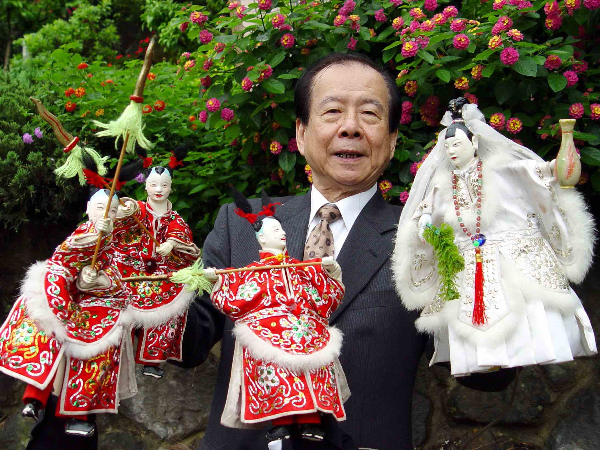
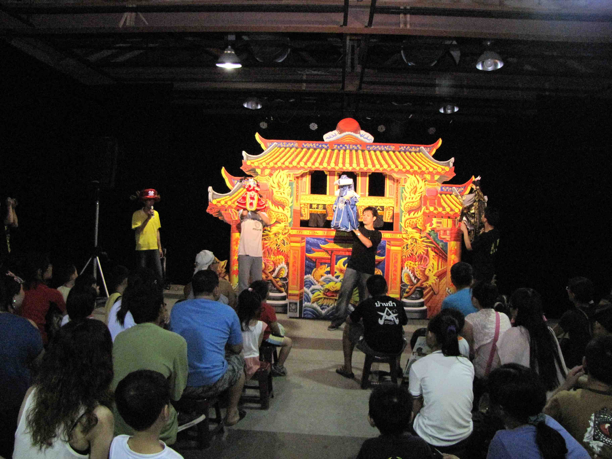

新興閣掌中劇團
HSIN HSING KU PUPPET SHOE TROUPE,A PROFILE
演出劇碼/孫悟空大戰紅孩兒
演出時間/
106.10.7(六)Sat. 16:00-17:00
劇團簡介
新興閣鍾氏開基始祖鍾五全於1828年(清道光8年)從福建漳州渡海來台，於西螺落籍創立協興布袋戲團，至今已有一百七十多年。後歷經鍾登風、鍾登祿、鍾登壽、鍾秀智等，傳至鍾任祥乃正式以新興閣掌中劇團為名；第五代掌門人、現任團長鍾任壁承父鍾任祥志業，益加發揚光大，師承「閣」派的布袋戲已達百團以上，在戲界獨霸一方。
鐘任壁簡介
民國21年出生於掌中戲世家的鍾任壁，自幼承襲家傳潮調布袋戲，很早就展露頭角，十七歲即能獨掌日間主演，以演技精湛、道白清晰著稱，「西螺幼獅仔」的聲名傳揚於戲界。在傳統掌藝上，除了將生、旦、淨、末、丑的口白、動作表達的栩栩如生外，更以武戲虎虎生風膾炙人口，鍾任壁自幼稟承家傳的武藝訓練，揣摩武學要領，使戲偶拳腳刀槍的身段，達到一般所不及的精準、漂亮與合理。不僅如此，鍾任壁手上旦角體態輕盈、婀娜多姿的含蓄之美，也為戲界所稱道。在秉持「傳統與創新」的理念下，亦致力研究戲台、佈景的創作，各種聲光效果的創新，期望掌中戲日新又新，充滿活力的新生命。因為有深厚的掌藝及創新的理念，「閣」派第五代掌門人鍾任壁，曾於民國54年、57年教育廳所舉辦的全省戲劇比賽連獲二屆「全國總冠軍」。
1982年受日本現代人形劇協會邀請，赴日本東京、大阪等12城市演講及演出，首開台灣布袋戲團出國演出先例。由於鍾任壁團長演技精湛，在演出時與觀眾更為親近，演出效果極佳，故而許多外國團體常指定由新興閣代表我國參與國際文化交流，在達到文化外交的目標、提昇國人在世界的能見度上貢獻良多。近年來新興閣受邀赴日、韓、大陸、馬來西亞、澳洲、美、德、法、瑞士、愛爾蘭、西班牙、墨西哥、斯諾維尼亞及匈牙利等國家演出超過五十次，以掌中戲進行國際文化交流，務實國民外交，贏得無數讚譽。
為使傳統文化能深紮根基，從77年起擔任台大、政大、淡大、花蓮師範等大專院校掌中戲老師；宜蘭孝威國小的「宜馨閣掌中劇團」、五結國中的「蘭馨閣掌中劇團」、三重明志國中的「明興閣掌中劇團」、台北少年觀護所「更生閣掌中劇團」、汐止保長國小掌中劇團、國立三重高中、國立雲林科技大學和日本琉球由桑江純子領導的「琉球新興閣掌中劇團」，也在新興閣無私、用心的栽培下開花結果。於78年起率先舉辦的「掌中戲入校園」活動，以義演、示範教學期許下一代學生從欣賞、學習、研究進而延續掌中戲傳統文化的命脈；因此，教育部設置的「民族藝術薪傳獎」鑒於鍾任壁在國內外教學、推廣的成績卓越而給予肯定，於80年教育部頒發「薪傳獎」殊榮，81年榮獲台北市頒發第一屆「台北市榮譽市民」勳章，87年榮獲斯諾維尼亞第九屆馬里波藝術節「25顆金星」最高榮譽獎項，92年榮獲：英國International Biographical Center 選入21世紀全世界風雲人物、雲林縣政府頒發「文化特別貢獻獎」、台北市文化局頒發「年度優勝劇團」及台北市政府頒發「布袋戲終身成就獎」等獎項，93年榮獲：台北市政府頒發「台北市模範勞工」、行政院勞委會頒發「全國模範勞工」、陳水扁總統親頒「文化貢獻獎」等獎項，95年起獲雲林科技大學聘為兼任教授，98年 獲台北市、台北縣政府合頒「第一屆臺北傳統藝術藝師」，99年 獲台北市政府頒「台北市傳統藝術藝師獎」。
「一口道盡千秋事、十指弄成百萬兵」的掌中魅力，總能使從藝已逾一甲子的鍾任壁忘卻辛勞，無怨無悔。一路走來，最大的願望便是能薪傳新興閣精湛的掌藝，並藉由各種紮根、推廣活動，使傳統藝術能充實民眾的生活內涵，進而發揮移風易俗的社教功能，讓社會更充滿祥和、快樂。

廖文和布袋戲團
演出劇碼/天下神秘路
演出時間/
106.10.13(五)Fri. 19:30-21:30
戲團簡介
享譽國際的廖文和布袋戲團，是文化部(文建會)國家傑出團隊，多年來連續受文化部、客委會、全國各地文化中心、文化局及文化處之邀於藝術活動，全國演透透，所到之處皆造成轟動，都吸引了大批觀眾，可謂「叫好又叫座」，真正找回布袋戲流失的觀眾。
雲林子弟廖文和注重表演藝術內涵，每年都推出新戲碼倍受肯定，1999年榮獲全球中華文化藝術薪傳獎，2000年榮獲國家級第一屆行政院文建會文耕獎，2000年當選全國好人好事代表榮譽獎，2003年榮獲首屆雲林文化獎唯一得主，2009年榮獲第一屆「聯合國教科文組織-國際木偶評委會」國際級三大金獎，曾獲全國地方戲劇比賽優勝獎。
廖文和布袋戲經常代表我國應邀躍上國際舞台，演出最受歡迎，造成轟動，每場表演結束後，總是被大批的戲迷團團圍住要求簽名，風靡韓國、美國舊金山、加拿大、澳門、大陸福建泉州、法國、比利時、盧森堡、德國...歐洲巡演國際文化交流表演，售票演出場場爆滿，2006年受邀到瑞士、荷蘭，2008年受邀到美國白宮國家博物館、賓州售票演出，2009年上海售票演出，2005、2010年法國巴黎、2011法國梅傑爾世界偶戲節售票演出，2013年美國洛杉磯迪士尼音樂中心、紐約皇后學院巡迴演出同樣最受歡迎。
廖文和布袋戲讓老、中、青著迷的最大特色是廖文和很重視演出品質，他一人口白可以變化二十多種人物的聲音，對木偶的操作已達到爐火純青，而且首創全國最大佈景及最大的木偶讓遠處的觀眾看得清楚。
劇情概述：【天下神秘路】善惡有報的故事
【天下神秘路】是廖文和布袋戲秉持一貫的武俠金光布袋戲表演風格，以劇情懸疑緊湊、高潮起伏、神秘莫測、對白風趣幽默取勝。故事演：在武林邊界有一處「天下神秘路」，一路彎曲、起伏不定、變化多端。
武林中有很多高手闖路，大部分都命喪於「絕命路」與「酷刑路」，少數有人可以進到「不敗路」，但因為貪心再闖「天下神秘路」而命絕。
此時武林出現比武得黃金、相殺博性命
賭命王挑戰黃金城主開殺取人命、一招絕無生，派出大護法戰無不勝勝中勝，與城主女兒人見人愛玉美人青梅竹馬訂下婚約，勝中勝比武敗陣，反而第二護法十面威風猛中猛得勝，親事改給猛中猛並追殺勝中勝，勝中勝被逼入天下神必路，勝中勝入「不敗路」復出改名冬風寂寞人，後來黃金城遭到大敗，玉美人求助冬風寂寞人是否舊情難斷出手相助？或者傷心痛恨落井下石呢？
真五洲掌中劇團
CHEN WU CHOU PALM PUPPET TROUPE,A PROFILE
演出劇碼/
雲州大儒俠–史、藏風雲之【儒俠再現】
演出時間/
106.10.14(六)Sat. 20:00-21:30
黃俊雄簡介
黃俊雄（1933年－），出身臺灣雲林縣虎尾鎮，是黃海岱的次子，曾連任兩屆台灣省戲劇公會理事長。14歲起，隨父學習布袋戲。其作品《雲州大儒俠》是台灣電視布袋戲的經典作品，2002年榮獲第37屆電視金鐘獎特別獎，2011年榮獲國家文藝獎，授證「人間國寶」頭銜。
1970年3月2日，黃俊雄將黃海岱的《忠孝節義傳》改編，成為自己的首部作品《雲州大儒俠》，首創以布袋戲搬到電視上表演。他將布偶尺寸加大，強調眼部的神氣，以流行音樂取代傳統的鑼鼓。在台視播出後轟動全台灣，造成萬人空巷，連續演出583集，創下當年台灣電視節目最高收視率97％。1974年6月25日，乃遭國民黨政府以「妨礙農工作息」為由停播。
黃俊雄創造台灣布袋戲，新的表演形式、和偶戲表演美學，更有在全省、各地【一百四十八間戲院】巡演‥之豐富外台經驗。在台灣戲曲藝術中，尤具其代表性地位。精研布袋戲口白五音，將傳統台語文美感與布袋戲巧妙結合，成為布袋戲後學典範；所創造的多元化角色，多數成為典型，甚至文化形象之代表，讓傳統戲曲跨越舞台並結合新科技的表演形式，突破知識份子與普羅大眾的界線，創造嶄新的表演場域，在傳統偶劇表演成就與想像空間上具有標竿意義。
劇情概述/
萬惡罪魁–藏鏡人，自不歸谷以及風沙谷失利後，仍心有不甘，欲擒史艷文之母水氏為人質，計引中原群俠‥自投羅網；並令【萬獸之王】崑崙原人帶領怪獸搜殺‥中原群俠，崑崙原人收到命令後，即派手下高徒管鐵馬，帶著戰國時代–歐冶子所創絕世神器【巨闕寶劍】，搜殺中原群俠。另外一方面..藏鏡人以史母為餌‥在天雷谷排兵佈陣。赴約的群俠不知中計，雙方混戰中，藏鏡人以撕票史母為由，令史艷文對敵..不敢予以重招，猛虎難敵猴拳，就在史艷文消閃剎那間..藏鏡人看出破綻，發出十成功力的飛瀑怒潮..擊中史艷文，被打中功體罩門的史艷文..噴飛現場。劉三、二齒、怪老子..急急尋找生死不明的史艷文，中原武林群龍無首，唯今之策‥先連絡四散中原眾群俠，尋找史艷文‥再營救史母。就在分開之後‥劉三等三人，遇萬獸之王帶領怪獸圍殺，劉等三人急急逃命，幸遇武林神秘人物‥乞丐皇帝–呂夢生營救；屋漏偏逢連夜雨，行船又遇對頭風。武林狂人【黑白郎君】又攔住去路，懸疑‥懸疑‥被擊中功體罩門的史艷文，究竟是生是死呢？黑白郎君為何攔住乞丐皇帝-呂夢生去路？史母是否能得救呢？欲知一連串精彩謎局‥敬請期待黃俊雄布袋戲-史、藏風雲之【儒俠再現】。


木藝堂
10.7.(六)Sat. 10:00
演出劇碼/戲偶大會師
團隊簡介/
「因為從小看布袋戲長大，木藝堂創辦人方志銘懷抱著對布袋戲偶濃厚的興趣和熱情，於布袋戲的故鄉─雲林縣虎尾鎮開設木藝堂。從木偶雕刻、造型、服飾等， 皆經由木藝堂設計團隊共同商討創作，近來更結合地方特色，自創一系列八家將和三國爭霸時期重要角色戲偶，並積極致力讓「木藝堂」成為南北各地布袋戲迷交流平台，帶動布袋戲文創風潮


古都掌中劇團
10.8.(日)Sun. 14:00
演出劇碼/府城傳奇 心海迷蹤
團隊簡介/
古都掌中劇團成立於2010年，古都成立以來，秉持著「傳統、創新、傳承」的理念，為臺灣最具代表性的傳統藝術－布袋戲的發展與傳承盡一份心力。 劇團至2016年力求突破，邀集各方人馬打造在地故事的非典型新創布袋戲，大獲各界好評，藉由該劇製作優質周邊商品，讓野台布袋戲得以媲美電視布袋戲，並大量使用劇場元素來結合布袋戲，導引民眾不只是看完一齣戲，而是能更了解臺南過往的點點滴滴；對布袋戲技藝這項本土文化瑰寶，有更深刻的認識以及傳承；古都期盼，透過不斷的推廣，使民眾對於台灣這塊土地的歷史與文化，能有更深入的瞭解與認同。
法務部矯正署雲林第二監獄傳統技藝訓練班
10.8.(日)Sun. 14:00
演出劇碼/江湖不歸路
團隊簡介/
雲林第二監獄本傳承傳統技藝之意，於民國96年成立掌中戲團，聘請彰化二水明世界掌中劇團茆國聰、陳怡臻老師為指導師資，101年結合醒獅戰鼓組成「傳統技藝訓練班」，延聘瀛洲民俗會館凌子宸教練入監教授。103年4月在縣府官長支持及矯正署的指導下辦理首次街頭藝人入監徵選，該掌中劇團、醒獅團均獲評審肯定取得證照，更開啟此次偶戲節之跨部會合作契機。
106年國際偶戲節的演出，特結合偶戲及獅鼓，希冀呈現收容人在學習中對傳統技藝之體悟及感動，同時希冀透過社會大眾的肯定重建收容人自信心，並帶來改悔向上、復歸社會之契機。也使此國際盛會展現更加多元及活潑的樣貌，及讓社會大眾體會傳統藝術之魅力。

清華閣周祐名掌中劇團
10.8.(日)Sun. 16:00
演出劇碼/哪吒大戰保麗龍
團隊簡介/
清華閣周祐名掌中劇團（ZOYOMINE PuppetGroup）承續日治時期「錦華閣」胡金柱老師（田仔師）一脈，秉持著「遵循傳統技藝，創新傳統精粹」之精神，持續推動教學傳承，展演，創作，團隊長期在各級學校致力於教學推廣，將傳統技藝向下扎根。
邀請各領域之藝術家跨界合作，共同創作充滿感動、驚喜、歡樂的掌中戲曲，推出適合各年齡層觀賞的奇幻武俠、古典史詩、臺灣故事、親子劇場四大類作品。
阿忠布袋戲
10.9.(一)Mon. 15:00
演出劇碼/流浪到淡水
團隊簡介/
阿忠布袋戲兼主演陳漢忠，1975年生，憑著對布袋戲的熱愛，15歲時就正式拜師「西螺新興閣」鍾任壁為師成為關門弟子，在團習藝十年，其中又經師父引薦至師兄「文興閣」掌中劇團蔡武雄處協助演出與見習，亦師亦兄的蔡武雄對阿忠長年累月的實際磨練和鼓勵之下，讓阿忠對布袋戲的未來有了新的啟發和見解，也為阿忠紮下演出和創造新布袋戲表演風格的戲膽。
退役之後，在師長的鼓勵之下成立了阿忠藝合團。曾經一起學藝的妻子阿萍，兩人共同打拼出阿忠藝合團的閃亮招牌，台灣布袋戲界也突然蹦出一個很異類的表演團體，阿忠說他的理想就是：創造布袋戲的無限可能，觀眾在哪裡，沒有觀眾，我就去創造觀眾。於是在時下年輕人最流行的PUB聚集場地、台視綜藝節目、衛視中文台……演出，受到各年齡、階層的觀眾熱烈的喜愛，阿忠開拓創造了自己的戲迷觀眾，而這些觀眾有很多是從不看布袋戲的。
錦飛鳳傀儡戲團
10.9.(一)Mon. 16:00
演出劇碼/嘉禮迎春戲元宵
團隊簡介/
錦飛鳳傀儡戲劇團創立於1920年代，
為三代相傳劇團，係承大陸泉州傀儡系統，
戲偶造型較為渾圓，偶頭雕工精細，
角色名稱分生、旦、北、丑（雜）四大行當，
基本操作線有十四條（視戲偶動作略有增減）戲曲音樂是南管系統的泉州腔、傀儡調。
錦飛鳳傀儡戲劇團，原為布袋戲劇團，由創始人「薛朴」拜師學藝於大陸唐山的傀儡戲大師「蔡因」，幾年後習藝有成，即自組「錦飛鳳劇團」，以演布袋戲為主，傀儡戲為輔，由於「薛朴」掌中技藝不凡加上傀儡戲的宗教儀式性濃，各處競相邀請演出，因而名噪一時，當時人人皆尊稱「薛朴」為「朴師」。
現任團長薛熒源為第三代團長，從小跟隨父親南征北討到各地演出，耳濡目染之下頗有天份，十二歲起父親就開始傳授傀儡戲技藝，在民國八十二年時，其父病故，接下團長重擔，為不負家傳志業及傳統傀儡戲表演藝術之未來能有所成就，遂召集錦飛鳳原有成員及對傀儡戲劇團表演藝術有興趣之年輕摯友共組第三代的錦飛鳳傀儡戲劇團，除努力加強表演技藝之外，亦求教於文化界專業人士和藝界同仁，為求技精，更遠渡異域習藝，幾年下來，薛忠信的努力為錦飛鳳贏得聲譽，曾被邀請至電視節目上演出，在1990年代亦曾被時為文建會邀請至台灣北部表演，此後地方縣市政府邀約持續不斷，因此在台灣錦飛鳳已逐漸成為一個家喻戶曉的名字。
不但獲文建會甄選為網路劇院表演團隊，且多次獲國立傳統藝術中心
邀請，且在中正紀念堂的台北燈會中演出，並多次出國參與國際性文
化藝術節的演出及交流，於89、90兩年度入選為高雄縣傑出演藝團隊，更加肯定「錦飛鳳」在表演藝術界的表現。
「金曲歌王」謝銘祐
10.9.(一)Mon. 19:30
演出劇碼/偶戲露天電影院
團隊簡介/
「金曲歌王」謝銘祐，資深音樂製作人、詞曲創作人、作家
扎根台灣這片土地，將這裡最美好的記憶化作音符
「一位資深創作人，帶著對生長土地的眷戀，唱遍台灣大街小巷」他是謝銘祐。
創作過不下百首當紅歌手主打歌，作品橫跨國台語歌壇，個人發行7張專輯，【台南】獲第24屆金曲獎最佳台語專輯、最佳台語男歌手；第四屆金音獎最佳民謠專輯；【情.也獸】獲第六屆金音獎最佳民謠專輯；【舊年】獲第28屆金曲獎最佳台語男歌手，以生命經驗譜寫出動人作品，其作品極致表達台語文字之美，被譽為臺灣「台語詩人歌手」。
2015年及2016年謝銘祐四處奔走，尋找日治時期至 1969 年間的唱片、人物及禁歌文件資料照片收集與採訪，企圖為台灣早期唱片黃金年代做一次完整記錄，將收集的音樂文史紀錄咀嚼沉澱後，推出新專輯【舊年】並將完整的音樂文史資料以影像呈現在「舊年懷舊演唱會」中，新專輯名稱取名「舊年」對謝銘祐本身意義非凡，他認為每一首老歌都有著時間軸，帶我們回到過去某個懷念的時光，台語歌謠誕生在特殊的時空背景，那是經歷戰亂後深刻反映在人們心底的寄託，那些描述時代背景的歌曲蘊含著珍貴記憶，是很多人心中的經典也是他創作能量的基石。
我們將這段豐富的台灣台語歌曲脈絡完整留存，舉辦全台【舊年】演唱會露天電影院巡迴，藉此回饋社會大眾，讓更多民眾親臨感受並賦予下一代理解台灣台語流行音樂演化史。
黃滙峰布袋戲團
10.10.(二)Tue. 17:00
演出劇碼/雷霆寰宇
團隊簡介/
傳承五洲園黃海岱大師第四代—新生代口白主演黃滙峰，從小在攝影棚長大，耳濡目染之際，實際參與布袋戲影視製作過程。2015年霹靂國際多媒體與日本動漫大師虛淵玄，合力拍攝大戲「東籬劍遊記」滙峰即擔任台語版口白配音，為新世代的布袋戲演出，注入一股全新的創造力!!
戲碼：雷霆寰宇
故事內容保留傳統忠孝節義之故事精華，再結合當代武俠精髓之意義，創作出新世代武俠布袋戲之演繹故事。演出方式結合傳統與現代，再搭配莘莘學子共同演出，激盪出一場又一場的火花，一場又一場的精緻好戲，值得闔家大小一起來欣賞!!
吳萬響掌中劇團
10.13.(五)Fri. 15:00
演出劇碼/戰水英雄傳
團隊簡介/
曾演劇目：
1.劇本：桃太郎笑傳、現代西遊記。
2.劍俠戲：乾隆君下江南（電視90多集）、紅黑巾。
3.於民國70幾年開始推廣兒童布袋戲「烏龍院」
特 色
1.初創野台戲，以燈光布景和機關巧妙的變化聞名一時，機關變景有：「活動雲景、蓮花化身、五大變景、空中騎獨輪車、戰船射大砲」等。
2.延續家傳手藝，以口白清朗分明及風趣的劇情取勝。
獲獎記錄：
1.於75~87年獲政戰部莒光日布袋戲特約劇團，於76年獲台灣電視公司委製布袋戲節目錄製劇團。
2.分獲76、78年台灣區掌中劇團總決賽甲等獎、優等獎暨86年獲雲林縣區掌中戲劇比賽評選績優（第一名）、台灣區掌中戲劇總決賽（最佳舞台技術獎）。
3.於87年榮獲文建會贊助「掌中乾坤」文化偶戲巡演優良團體。
4.91年度經縣府文化局評審入選「雲林縣傑出演藝團隊」。
黃世志電是木偶劇團
10.14.(六)Sat. 16:00
演出劇碼/封神演義
團隊簡介/
黃世志，師承黃俊雄老師（100年獲得文化部選為人間國寶「傳統藝術文化保存者」），在高中時期即進入黃俊雄老師的劇團學習多年後，正式拜師，不論是口白、操偶、電視拍攝技巧、舞臺設計、戲偶造型設計…等，經由黃俊雄老師嚴格調教下，有所成績。他致力於推廣布袋戲技藝，從事布袋戲演出、戲偶製作、社區推廣、教學傳承已20年。
黃世志目前為黃世志電視木偶劇團負責人， 曾任職於黃俊雄電視布袋戲、霹靂國際多媒體股份有限公司…等。目前團隊所製作推廣演出、教學的內容大多為親子或學生族群，舉凡在木偶的操作技藝、戲偶造型設計、道具製作及口白表演…等，皆有豐富的創作力，戲偶的造型呈現及演出方式，不侷限在傳統布袋戲的製作框架內，同時勇於嘗試傳統戲偶與其他多樣化戲偶造型之演出、創作。